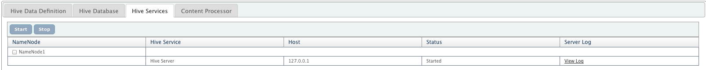

This chapter explains Hive services with QueryIO.
Hive is a data warehouse system for Hadoop that facilitates easy data summarization, ad-hoc queries, and the analysis of large datasets stored in Hadoop compatible file systems. Hive provides a mechanism to project structure onto this data and query the data using a SQL-like language called HiveQL. At the same time this language also allows traditional map/reduce programmers to plug in their custom mappers and reducers when it is inconvenient or inefficient to express this logic in HiveQL.
QueryIO manages one Hive server per NameNode on the same system where the NameNode is installed.
To manage Hive service, go to Admin > Manage Hive tab. Go to Hive Services tab. Hive services related to each NameNode are displayed.
Hive are installed along with NameNode and started automatically.
Following details about services are displayed:
QueryIO provides service to start or stop services on a particular NameNode.
Select the NameNode and click on "Start" or "Stop" buttons to perform start/stop operations on the associated Hive services respectively.